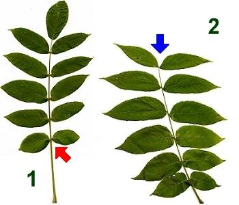
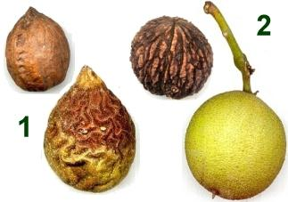

|
| Ähnliche Bäume:
Die Butternuss (1) und die Schwarznuss (2) haben ähnliche Blätter wie die Flügelnuss.
 |  Ihre Früchte sehen jedoch ganz anders aus.
Die Fiederblättchen der Butternuss überlappen sich nicht in der Mitte.
Das Blatt der Schwarznuss hat kein Endblättchen oder nur ein sehr kleines.
|